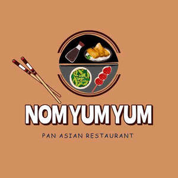

Trade Mark Journal No.2025/021 23 May 2025
UK00004199402 6 May 2025 (43)

- Class 43
- Banqueting services; Bar and restaurant services; Bistro services; Business catering services; Café services; Cafe services; Cafés; Carry-out restaurants; Catering; Catering (Food and drink -); Catering for the provision of food and beverages; Catering for the provision of food and drink; Catering in fast-food cafeterias; Catering of food and drink; Catering of food and drinks; Catering services; Catering services for company cafeterias; Catering services for the provision of food; Catering services for the provision of food and drink; Contract food services; Fast food restaurants; Fast-food restaurant services; Food and drink catering; Food and drink catering for banquets; Grill restaurants; Hotel restaurant services; Mobile catering; Mobile catering services; Mobile restaurant services; Restaurant and bar services; Restaurant services; Restaurant services for the provision of fast food; Restaurant services incorporating licensed bar facilities; Restaurants; Restaurants (Self-service -); Salad bars [restaurant services]; Self-service cafeteria services; Self-service restaurant services; Self-service restaurants; Services for providing food; Services for providing food and drink; Serving food and drink for guests in restaurants; Serving food and drink in restaurants and bars; Take away food and drink services; Take away food services; Take-away fast food services; Takeaway food and drink services; Take-away food and drink services; Takeaway food services; Take-away food services; Takeaway services; Take-out restaurant services; Catering of food and drink; Cocktail lounges; Corporate hospitality (provision of food and drink); Food and drink catering; Hospitality services [food and drink]; Preparation of food and beverages; Preparation of food and drink; Providing food and drink.
Luxe food & Hospitality Limited